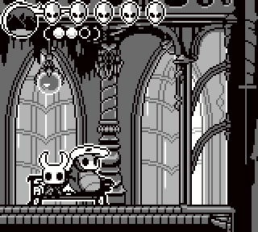

Fanarts

«POEMA DE LOS SOÑADORES».
"En los bosques agrestes, con respeto y tristeza pronuncian tu nombre,
Nadie podía domar nuestras almas salvajes, pero tú te ganaste el renombre,
Bajo vigilancia pálida, nos enseñaste, cambiamos, Redimimos nuestros básicos instintos,
A bicho y bestia le otorgaste un mundo nunca visto.
En tu cadáver aún resuenan los gritos insatisfechos de aquél,
que dolor, pérdida y sueños en su coraza quiso mantener.
A través de su dolor, hallamos una verdad amarga como la hiel:
Los deseos y los sueños solo la oscuridad total los puede detener."